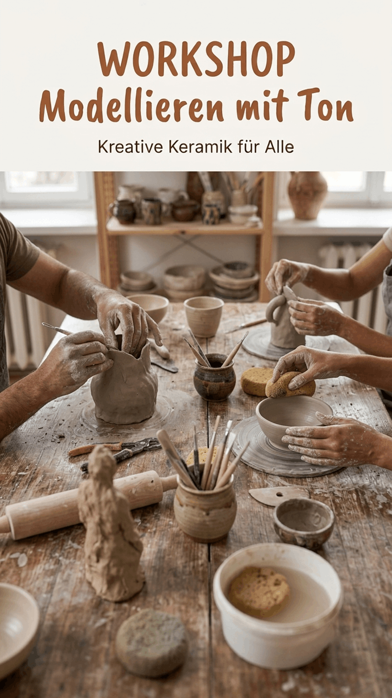
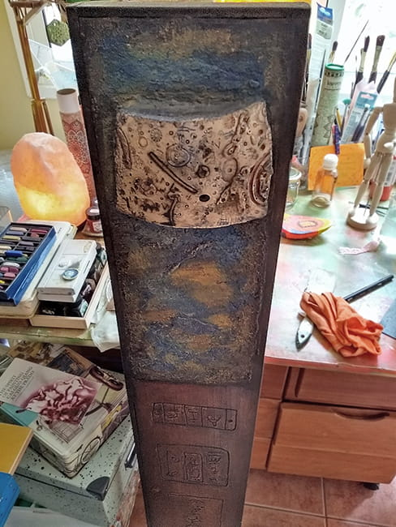

Studio Journal

Clay Modeling Workshop
Hello neighbors,
I'm an artist and art teacher, and I'd like to invite you to a creative clay modeling workshop.
The focus is on the joy of creating, sharing ideas, and working with your hands. No prior experience is necessary.
I'm originally from Spain, and if you'd like, you're welcome to practice a little conversational Spanish during the workshop in a relaxed and informal way. However, no knowledge of Spanish is required.
The workshop will take place in the Lichterfelde-Ost neighborhood, either in my studio or, weather permitting, in our community garden. Workshop dates are flexible and will be scheduled based on the number of people who are interested.
Space is limited. If you'd like more information, please feel free to get in touch.
Simply send me a message at

Fragment of a Memory
My latest work – a fired ceramic piece on a column-like base – a
unique piece – a fragment of a memory of mine that I thought had
long been forgotten.
Like a relic unearthed from an inner landscape, this work bears
traces of a forgotten language. Its ceramic surface reveals signs,
impressions and traces that seem to hover between memory and
imagination. Resting on a dark metal column, the fragment becomes a
vessel for that which persists beneath conscious memory. It is not
the memory itself that returns, but its residue – altered by time,
yet still capable of speaking through texture, form and material
presence.

The Magic of Totems
A totem is an archetypal symbol expressing the profound connection between human beings and nature—manifested through animals, plants, mountains, rivers, or springs. It reflects an awareness of our belonging to the natural world, rooted in the collective unconscious and the transpersonal dimension of human experience.
In today’s technologically mediated world, this awareness is increasingly fading, and with it an essential source of spiritual depth and individual creativity.
As symbolic forms, totems mediate between the collective unconscious and individual consciousness. Across cultures, this understanding has been preserved through myth, ritual, and totemic imagery.
In my artistic practice, the motif of the totem appears as a recurring symbolic structure. Through paintings and my Totem sculptures, I explore the relationship between archaic memory, inner experience, and the spiritual dimensions of nature. My work evokes universal archetypal energies and seeks to make the primal and the transpersonal tangible through contemporary art.
artbook Berlin 2025
In November 2025, I took part in artbook.berlin, the annual fair for artist books and small publishers at Kunstquartier Bethanien in Berlin-Kreuzberg. Over three days, I presented a selection of my work alongside book artists, printmakers, and independent publishers from Berlin and beyond.
It was a wonderful opportunity to meet other artists and present my work to a new audience in the city that I now call home. I would like to extend my special thanks to Cornelius and Hanneke for their excellent organization and warm hospitality.
Any questions? · Simply get in touch
Get in touch with me